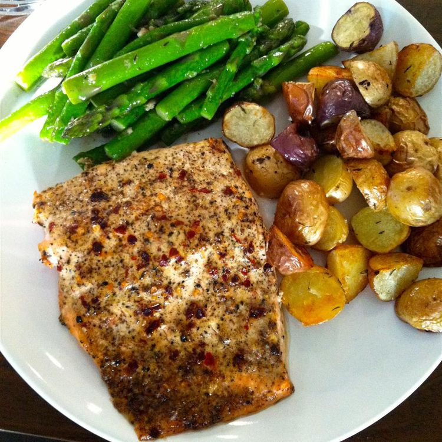

Baked Lemon Pepper Salmon

Description
You don't need the broiler to make great salmon fillets. A hot oven can produce tender, moist, flaky meat every time. This baked lemon-pepper salmon recipe uses lots of lemon juice and black pepper.
Ingredients
- 2 tablespoons lemon juice
- 1 tablespoon ground black pepper
- 1 ½ tablespoons mayonnaise
- 1 tablespoon yellow miso paste
- 2 teaspoons Dijon mustard
- 1 pinch cayenne pepper, or to taste
- 2 (8 ounce) center-cut salmon fillets, boned, skin on
- sea salt to taste
Steps
- Whisk together lemon juice and black pepper in small bowl. Add mayonnaise, miso paste, Dijon mustard, and cayenne pepper to lemon-pepper mixture; whisk together.
- Spread the lemon-pepper mixture over salmon fillets. Reserve about a tablespoon for later use.
- Cover salmon with plastic wrap and refrigerate for 30 minutes.
- Preheat the oven to 450 degrees F (230 degrees C). Line a baking sheet with parchment paper or silicone baking mat.
- Place fillets on the prepared baking sheet. Spread remaining lemon-pepper mixture on fillets without letting it pool around base. Sprinkle with a pinch more black pepper and a generous amount of sea salt.
- Bake in the preheated oven until the fish flakes easily with a fork, 10 to 15 minutes.